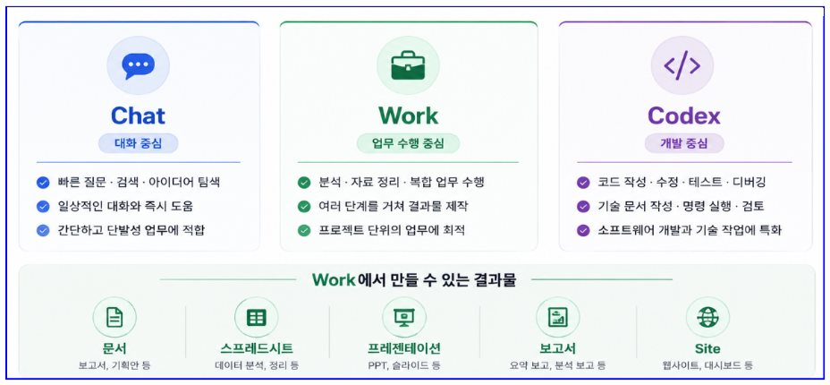
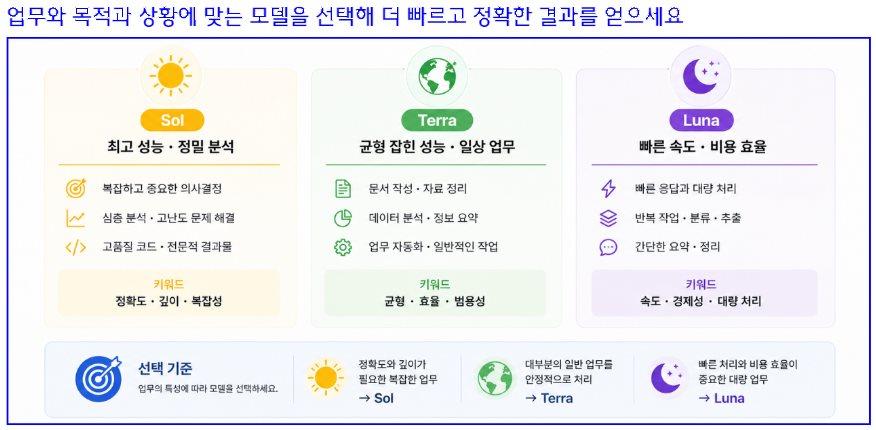
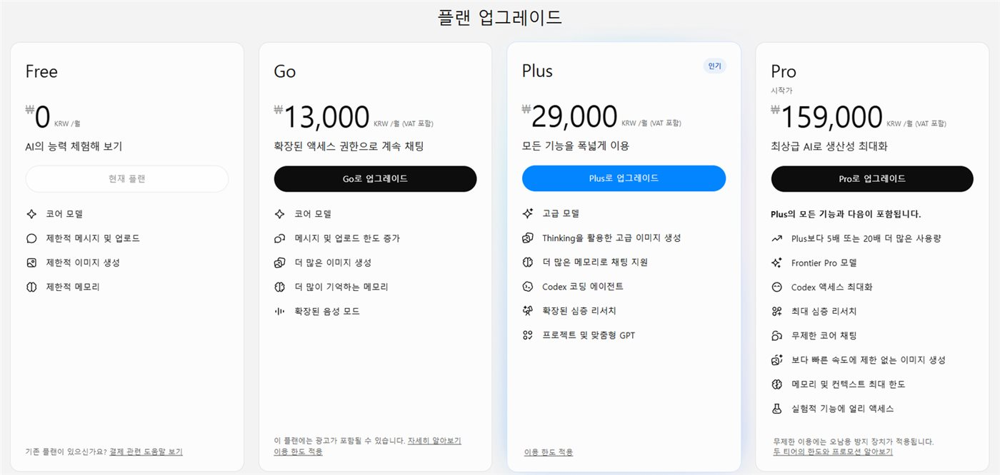
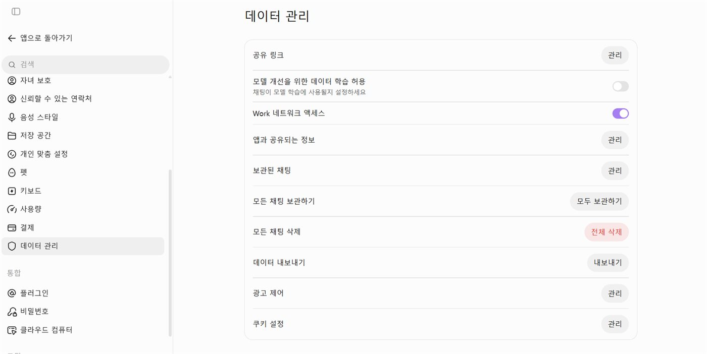
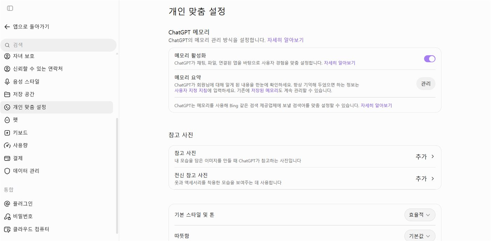
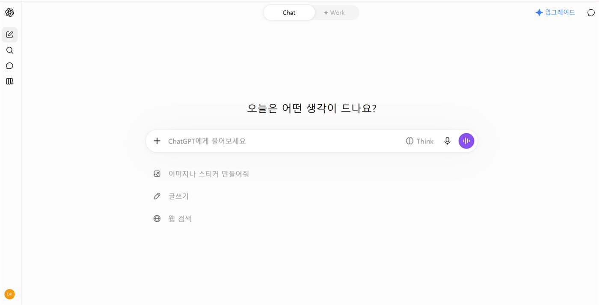
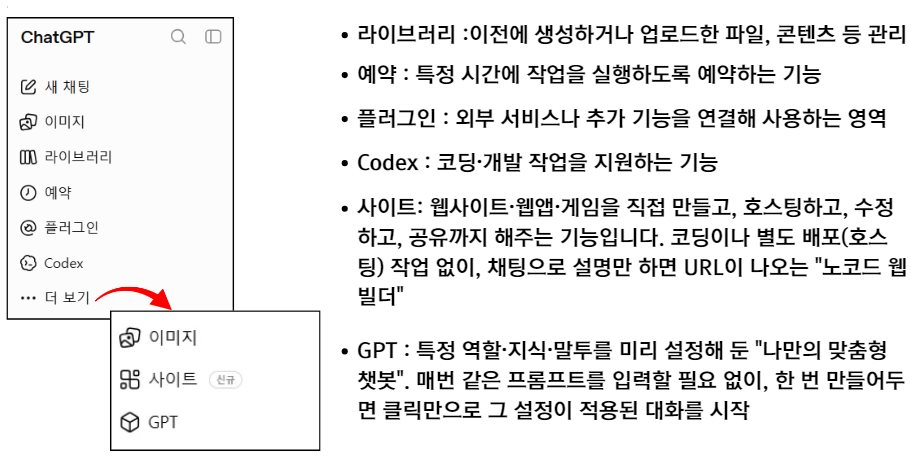
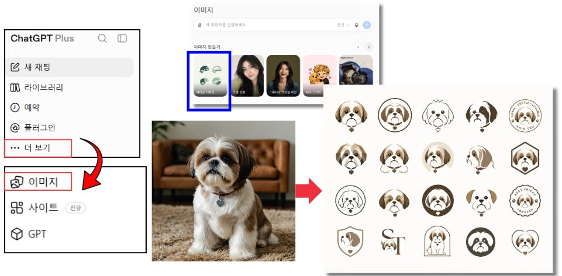
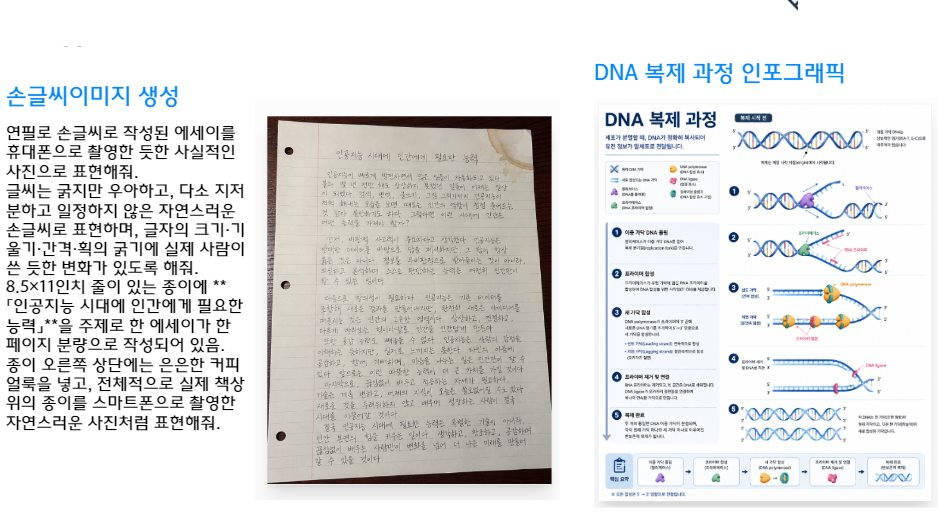

01실습 준비 체크 — 계정 · 앱 · 파일
시작 전에 4가지를 확인합니다.
02챗GPT 업무 환경 — 목적에 맞는 공간 선택
대화는 Chat, 결과물을 끝까지 만드는 일은 Work, 개발은 Codex

| 공간 | 중심 | 이럴 때 |
|---|---|---|
| Chat | 대화 중심 | 빠른 질문·검색·아이디어 탐색 · 일상적인 대화와 즉시 도움 · 간단하고 단발성 업무 |
| Work | 업무 수행 중심 | 분석·자료 정리·복합 업무 수행 · 여러 단계를 거쳐 결과물 제작 · 프로젝트 단위 업무 |
| Codex | 개발 중심 | 코드 작성·수정·테스트·디버깅 · 기술 문서·명령 실행·검토 |
Work에서 만들 수 있는 결과물 — 문서(보고서·기획안) · 스프레드시트(데이터 분석·정리) · 프레젠테이션(PPT·슬라이드) · 보고서(요약·분석 보고) · Site(웹사이트·대시보드)
ChatGPT 5.6 모델 선택 가이드
업무와 목적과 상황에 맞는 모델을 선택해 더 빠르고 정확한 결과를 얻으세요.

| 모델 | 특징 | 이럴 때 |
|---|---|---|
| Sol | 최고 성능 · 정밀 분석 (정확도·깊이·복잡성) | 복잡하고 중요한 의사결정 · 심층 분석 · 고품질 결과물 |
| Terra | 균형 잡힌 성능 · 일상 업무 (균형·효율·범용성) | 문서 작성·자료 정리 · 데이터 분석·정보 요약 · 일반 업무 |
| Luna | 빠른 속도 · 비용 효율 (속도·경제성·대량 처리) | 빠른 응답 · 반복 작업·분류·추출 · 간단한 요약·정리 |
단순 대화(Chat)에서 업무 위임(Work)으로
[Chat] 단순 대화 모드
질문·요청에 즉각 응답
사용자의 질문과 프롬프트에 응답하며 대화 중심으로 작업
[Work] 실행형 업무 에이전트
분석 · 계획 · 도구 활용 · 결과물 생성
복잡한 업무를 여러 단계로 계획·실행하고 문서·분석·슬라이드 등 결과물까지 완성
03챗GPT 플랜과 사용 한도
요금제에 따라 쓸 수 있는 모델·기능·사용량이 다릅니다. 오늘 실습은 유료 요금제 기준입니다.

| 플랜 | 월 요금 | 주요 내용 |
|---|---|---|
| Free | ₩0 | 코어 모델 · 제한적 메시지 및 업로드 · 제한적 이미지 생성 · 제한적 메모리 |
| Go | ₩13,000 | 메시지·업로드 한도 증가 · 더 많은 이미지 생성 · 더 많이 기억하는 메모리 · 확장된 음성 모드 (광고 포함 가능) |
| Plus | ₩29,000 | 고급 모델 · Thinking 고급 이미지 생성 · 더 많은 메모리 · Codex 코딩 에이전트 · 확장된 심층 리서치 · 프로젝트 및 맞춤형 GPT |
| Pro | ₩159,000~ | Plus의 모든 기능 + 5배 또는 20배 사용량 · Frontier Pro 모델 · 최대 심층 리서치 · 무제한 코어 채팅 등 |
무료 사용 한도
- GPT-5.5 Instant 제한적 사용 (※상황에 따라 사용량 편차 있음)
- 언어 모델 선택이 불가 (일반 채팅)
- GPT-5.5 Instant 5시간 단위 사용량 제한 (횟수 차감되면 자동으로 mini로 전환)
- 파일첨부 가능 (한 번에 최대 5개 동시 첨부, 한글파일 첨부 가능)
- 데이터분석 — 표 작성, 웹검색, 그래프 변환, 파일형식 변환 후 파일 다운로드 가능
- GPT 탐색 사용 (GPT 제작은 불가)
- Project 제작 가능
- 이미지 생성 (최대 6장, 변동 가능)
- 잘 생각하기, 심층 리서치 모델 제한적 사용
유료 사용 한도
- GPT-5.6 시대 개막 (2026.7.9 업데이트)
- GPT-5.5 Instant 3시간 160챗 (횟수 차감되면 자동으로 mini로 전환)
- 추론 옵션(Medium/High/Extra High) 선택 시 최신 GPT-5.6 Sol 작동
- Work 탭 신설: Sol·Terra·Luna 3개 모델 직접 선택 + 수준 설정 가능
— Sol: 최고성능 플래그십 / Terra: 일상업무용 균형형 / Luna: 최고속·최저가 - 파일 형식 변환, 파일 다운로드
- 횟수 제한 없이 이미지 생성 및 수정 가능
- Tasks(일정예약)
- 심층리서치 기능 제한적 사용 · 에이전트 기능 제한적 사용
- Codex Agent (코드·문서·도구 연동)
- Custom GPT 만들기·공유 (GPT 스토어 업로드 가능)
챗GPT 홈 화면 — 무료 vs 유료
04데이터 관리 · 개인맞춤설정 · 임시 채팅
실습 전에 데이터 설정을 확인하고, 내 업무에 맞는 답변 방식을 미리 정해 둡니다.
챗GPT — 데이터 관리
설정 → 데이터 관리에서 ‘모델 개선을 위한 데이터 학습 허용’ 여부를 확인합니다. 채팅이 모델 학습에 사용될지 직접 설정할 수 있습니다.

챗GPT — 개인맞춤설정
설정 → 개인 맞춤 설정의 ‘사용자 지정 지침’에 원하는 답변 방식을 적어 두면 모든 대화에 적용됩니다.

추측하거나 단정하지 말고, 확인 가능한 정보와 근거를 중심으로 답변한다. 확실하지 않은 내용은 "확실하지 않음", "추가 확인 필요"라고 표시한다. 최신 정보가 필요한 내용은 현재 기준으로 확인하여 답변한다. 법률, 의료, 금융, 세금, 안전 등 전문 분야는 일반 정보와 전문 판단을 구분하여 설명한다. 중요한 정보는 정부기관, 공공기관, 공식 홈페이지 등 신뢰할 수 있는 출처를 우선 참고한다. 답변은 핵심부터 제시하고, 필요한 경우 단계별로 쉽게 설명한다. 어려운 전문용어보다 초보자도 이해하기 쉬운 표현과 실제 예시를 사용한다. 여러 방법이 있을 경우 장단점을 비교하고, 가장 쉽게 적용할 수 있는 방법부터 제시한다. 글쓰기나 업무 문서는 목적과 대상에 맞게 정확하고 간결하게 작성한다. 사용자가 바로 활용할 수 있도록 예시, 실행 방법, 체크리스트 등을 함께 제공한다.
임시 채팅
대화 기록에 남기지 않는 일회성 채팅입니다. 일시적으로 확인할 내용에 활용합니다.

05Work 탭 핵심 기능
2026년 7월 9일 업데이트로 생긴 ‘실제 업무 결과물을 만들어내는 에이전트 환경’
일반 Chat이 대화 중심이라면, Work는 실제 업무 결과물(문서·발표자료·스프레드시트 등)을 만들어 내는 에이전트 환경입니다.
- 모델 직접 선택GPT-5.6 Sol / Terra / Luna 3개 모델 중 선택 + 추론 수준 설정 가능
- 연결된 업무 앱·파일 활용Gmail, Google Calendar 등에서 필요한 정보를 찾아 업무 수행 (“내 할 일 정리해줘”, “후속 이메일 초안 작성해줘” 등)
- 결과물 생성문서, 스프레드시트, 프레젠테이션, 보고서 등을 만들거나 편집 · 기존 파일이나 템플릿을 참고해 형식·레이아웃·브랜드 등을 맞추는 것도 지원
- 프로젝트 선택 — 기존 프로젝트와 연결해 맥락 유지한 채 작업
- 파일 다운로드 — 결과물 생성 및 저장/활용
06사이드바 메뉴와 플러그인 — Gmail, Canva 등
플러그인을 추가하면 ChatGPT 대화창에서 바로 메일을 찾고 디자인을 만듭니다.

플러그인 — Gmail
Gmail 추가 후 → 도구 메뉴에서 Gmail 선택 → 아래 프롬프트 입력
최근 5일간 내 메일함을 검색해서 핵심사항만 알려줘. 중요하거나 긴급한 사항이 있으면 빨간색으로 표시해줘
플러그인 — Canva
Canva 추가 후 → 도구 메뉴에서 Canva 선택 → 아래 프롬프트 입력
가로 300cm × 세로 90cm 크기의 어머님 칠순 축하 현수막을 만들어줘. 전체 디자인은 따뜻하고 품격 있는 분위기로 구성하고, 고급스러운 꽃 장식과 은은한 색감을 활용해줘. 중앙에는 "사랑하는 어머님의 칠순을 진심으로 축하드립니다"라는 문구를 크고 잘 보이게 배치해줘. 한쪽에는 가족사진을 넣을 수 있도록 가로 약 80cm × 세로 60cm 비율의 사진 공간을 마련하고, 사진이 들어갈 위치는 자연스럽고 균형 있게 구성해줘. 전체적으로 멀리서도 글자가 잘 보이도록 가독성을 높이고, 가족이 함께 축하하는 따뜻하고 정성스러운 칠순 축하 현수막으로 디자인해줘.
07이미지 생성 · 편집 (실습: 아이콘 디자인)
왼쪽 메뉴 더 보기 → 이미지에서 ‘아이콘 디자인’ 같은 템플릿을 고르고 사진을 올리면 바로 이미지를 만들어 줍니다.

이미지 생성 — Image 2.0

08조합 업무 AI 보안 수칙 3가지
편리함보다 먼저 지켜야 할 기본 원칙